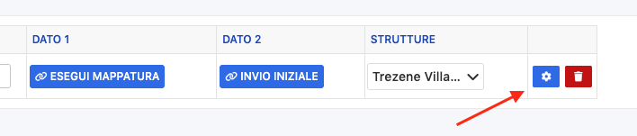

Il sistema
AccommodationSMART
(o Eurosystem)
consente la gestione da remoto di strutture ricettive (B&B,
hotel, case vacanze, residence, ecc.).
In
Scidoo,
puoi integrarlo per generare
automaticamente i codici di accesso
delle camere.
Vai su Impostazioni → Generali.
Accedi alla sezione Integrazioni.
Clicca su + Nuova integrazione.
Seleziona AccommodationSMART dall’elenco.
Premi sull’icona (⚙️) per aprire le impostazioni.
Inserisci il Token o API Key fornito dal provider.
Premi il pulsante Scarica per caricare i dati.
🔴Assicurati che il token sia corretto e attivo. Un token errato bloccherà l’intera integrazione.
Inserisci il campo Codice locale automatico.
Deve coincidere perfettamente con il nome del Codice Locali configurato nel sistema di AccommodationSMART.
🔴 Se il nome non è identico, la generazione automatica dei codici non funzionerà.
Dopo aver confermato i dati, premi su Conferma.
Poi clicca su Attiva per rendere operativa l’integrazione.
Se hai attivato la generazione automatica:
Accedi a una prenotazione.
In alto a destra, clicca sul pulsante “Software”.
Il codice sarà già generato automaticamente e visibile.
🔴 Questa funzione è attiva solo se il Codice Locale Automatico è configurato correttamente.
Se non hai attivato l’automatismo:
Apri la prenotazione.
Vai su Software.
Clicca su Genera Chiave per creare manualmente il codice di accesso.
🔴 Le prenotazioni
già esistenti
prima della configurazione non
generano i codici in automatico.
🔴
In questi casi, è
obbligatorio
generare le chiavi manualmente una per una.
Per inviare il codice via email o messaggio al cliente:
Accedi a Modelli di messaggio.
Crea un nuovo modello o modifica uno esistente.
Inserisci il tag
codice
tag nel
punto desiderato del messaggio.
Dal menu a tendina, seleziona la variabile Chiave.
🔴 Si sconsiglia l’invio automatico del codice per motivi di sicurezza. È preferibile avere un controllo manuale sull'invio.
Se preferisci fornire il codice in formato cartaceo o PDF:
Apri la prenotazione.
Vai nella sezione Ospite.
Troverai il codice generato.
Clicca sull’icona della stampante 🖨️ accanto al codice.
🔴La stampa è utile come alternativa all’invio automatico, o come backup manuale in caso di problemi con i messaggi.
Fase |
Azione principale |
|---|---|
Configurazione |
Impostazioni → Generali → Integrazioni → AccommodationSMART |
Attivazione |
Inserisci API Key → Codice locale → Conferma → Attiva |
Generazione codice |
Automatica (se attiva) o Manuale (pulsante “Genera”) |
Invio al cliente |
Crea modello → Tag
|
Stampa codice |
Dalla prenotazione → Sezione ospite → Icona stampa |
Per collegare Guest Pass ci servono i seguenti dati di accesso al portale TURIST MANAGER:
user
password
id generico
Per il funzionamento, la struttura dovrà entrare nella prenotazione, cliccare su SOFTWARE- + GENERA CHIAVE e la mail arriverà al primo componente della prenotazione
per impostare il collegamento con Trentino Guest Card seguire i passaggi:
IMPOSTAZIONI
GENERALI
INTEGRAZIONI
NUOVA INTEGRAZIONE
SOFTWARE → selezionare Trentino Guest Card dal menù a tendina
cliccare su MOSTRA TIPI CARTA e tenere a mente il numero tra le parentesi quadre […]
cliccare sulla rotellina ed inserire i seguenti dati
user
password
tipo_card (precedentemente visualizzata su MOSTRA TIPI CARTA)
flaggare DISATTIVA_CREAZIONE_AUTOMATICA
cliccare su CONFERMA
cliccare sotto la colonna ATTIVO per attivare il collegamento
per generare la chiave di Trentino Guest Card seguire i passaggi:
entrare nella prenotazione
SOFTWARE (in alto a destra)
+ GENERA CHIAVE → a questo punto partirà un messaggio automatico direttamente da Trentino Guest Card.
Collegamento con TTLock:
user
password
Collegamento con Myforecast.
Myforecast ci invia una email con l'HOTEL CODE
Andare su Impostazioni → Generali → Integrazioni → Nuova Integrazione → Myforecast
Inserire l'Hotel code nel campo URL
Inserire i codici delle fasce di età; ⚠️lato MyForecast nel formato del messaggio accettato sono possibili 5 fasce d’età:
ADULT
CHILD
TEENAGER
INFANTS
OTHER
Dove?: Vai in settaggio come da immagine

Inserisci le fasce di età [le prime tre vengono inserite in automatico ma se ci sono altre le devi inserire te]
Dove prendi l'ID da inserire?→ in Fasce Età Clienti di Scidoo trovi la colonna ID
5. Cliccare su “Esegui Mappatura”
6. Rispondere alla loro email dicendo che è stata eseguita la mappatura da parte nostra
7. Invia anche le API KEY create in Scidoo ed attendere loro riscontro prima di mettere flag su ATTIVA
Integrazione terminata.
Collegamento Omnitec
Dati necessari:
client id
client secret
utente
password
Utente e password non sono gli stessi usati per accedere all'app “Rent & Pass”
Per ottenere le credenziali, bisogna entrare nell'app e selezionare “il mio account”
Domotica Scidoo
Registrazione:
https://www.accommodationsmart.cloud/index.php
->
Registrati
-
Inserire email e matricola
-
trovo devic sulla wifi e mi collego (PW: DevIcWiFi)
-
Poi si va in http://10.10.10.1/
-
Da
(https://www.accommodationsmart.cloud/adddevices.php?indexn=devicemanager)
-
Gestione Gateway
-
Aggiungi Gateway
-
La matricola è scritta sul devic nero
-
Config. Generale
-
Crea nuovo impianto
-
mettere la descrizione e mettere la spunta sul gateway associato
-
poi clicco sul pulsante verde su kit ingresso base
REVOLUTION
invierà i prezzi a massima occupazione.
IMPOSTAZIONI – GENERALI – INTEGRAZIONI – NUOVA INTEGRAZIONE – selezionare Revolution (Franco Grasso) – inserire le credenziali fornite da Revolution:
user:
password:
id generico (loro lo chiamano PID):
url:
successivamente cliccare sulla rotellina ed inserire la data di inizio sincronizzazione oppure cliccare su prima configurazione. In fine fleggare su ATTIVA per attivare il collegamento
Qualitando
Per collegare Qualitando abbiamo bisogno dei seguenti dati :
USER (Client Key)
PASSWORD (Authentication Token)
da inserire all'interno di IMPOSTAZIONI-GENERALI-INTEGRAZIONI-NUOVA INTEGRAZIONE-selezionare QUALITANDO
Per collegare il POS a Scidoo abbiamo bisogno:
che il POS abbia il Protocollo ECR17
Indirizzo IP Statico
Porta
Per collegare il POS seguire la procedura:
IMPOSTAZIONI
GENERALI
DISPOSITIVI
+ DISPOSITIVO → selezionare POS
cliccare su CONFIGURAZIONE
inserire l'INDIRIZZO IP Statico
inserire la PORTA
selezionare la POSTAZIONE
cliccare su + TOKEN
Per creare la configurazione è necessario andare su:
Generali → Integrazioni → Teamsystem
Da Ricordare:
Codici IVA (Popolare il “Codice Integrazione”)
Codice Integrazione su ogni metodo di pagamento
Sulle impostazioni dell'integrazione (mettere l'ID della numerazione fiscale)
Inserire i CONTI RICAVO su Impostazioni → Fiscalità
Associrare eventualmente ad ogni Prodotto/servizio o cartella il rispettivo “Conto ricavo”
Inserire su Impostazioni → Fiscalità → Impostazioni Fatture → Modifica “Codice Ditta” → mettere il codice di Teamsystem
Per il collegamento con Google Sheet (Finalizzato alla sincronizzazione di dati e prezzi)
Andare in impostazioni → Generali → Integrazione → Aggiungere Google Sheet
Il cliente, all'interno della sua licenza e con Google loggato all'interno del proprio account deve cliccare su “Collega” e fornire i vari permessi a Scidoo per poter creare il foglio all'interno dell'account del cliente.
La struttura deve creare un file dentro Google Sheet e salvarlo. Una volta aperto dall'url estrare la parte alfanumerica che indica l'ID del foglio (Esempio: https://docs.google.com/spreadsheets/d/1WkZ6bWFek8Hl2wKFbXAYDTdmXdwhfiwIGKHDpau1CW0/edit?gid=0#gid=0 in questo caso è: 1WkZ6bWFek8Hl2wKFbXAYDTdmXdwhfiwIGKHDpau1CW0.
Copiarlo dentro all'ingranaggio dentro all'integrazione.
Ogni 20 minuti si sincronizza. Verrano creati automaticamente i fogli ed inseriti automaticamente i dati.
Nota Bene:
Per poter creare le colonne dei prezzi da sincronizzare e portare dentro Scidoo è necessario che su → Vista prezzi generale → All'interno delle varie tariffe e camere → Visualizza Occupazione Servizio → Sia impostata l'occupazione di default e "OCCUPAZIONE DA VISUALIZZARE"
il foglio Google nella cella in alto a sinistra viene creato con OFF. Per poter creare le colonne delle tariffe va settato su ON.
ViKey è un'integrazione per la domotica di apertura porte; per collegare ViKey abbiamo bisogno dei seguenti dati:
1) la struttura deve chiedere di inviarci le ApiKey di collegamento direttamente a ViKey
2) IMPOSTAZIONI – GENERALI – INTEGRAZIONI – NUOVA INTEGRAZIONE (selezionare Vikey) – ROTELLINA ed inserire la stringa nella prima riga (Api_Key) – creare tutte le camere (a sinistra inserire il nome della camera dentro Vikey mentre a destra va collegata con le camere dentro Scidoo)
3) se viene cliccato RICHIEDI_CHECKIN il codice partirà 1 giorno prima dell’arrivo solo se il cliente avrà fatto il check-in on-line; mentre se non viene selezionato RICHIEDI_CHECKIN il codice si dovrà generare manualmente entrando nella prenotazione – SOFTWARE - + GENERA CHIAVE. (il codice verrà inviato direttamente da Vikey)
Collegamento HBenchmark
Per collegare HBenchmark serviranno i seguenti dati [vengono inviati da loro per mail]:
USER
PASSWORD
per effettuare il collegamento seguire i passaggi:
IMPOSTAZIONI
GENERALI
INTEGRAZIONI
NUOVA INTEGRAZIONE e cercare HBenchmark
inserire le credenziali
⚠️NON E' NECESSARIO METTERE LA SPUNTA SU “ATTIVO”
⚠️INSERIRE SEMPRE DATA DI INIZIO [tendenzialmente lo richiedono loro per mail]
❗ATTENZIONE❗ EFFETTUARE SEMPRE LA PRIMA SINCRONIZZAZIONE INSERENDO NEL CALENDARIO LE DATE
effettuare la sync
inviare per mail i codici corrispondenti ai trattamenti in Scidoo ES: Bed&Breakfast CODICE 231227 [se apri la retta in Scidoo nel campo IDSERVIZIO trovi il codice]
Collegamento SMARTPRICING per la trasmissione dei prezzi a Scidoo:
(1)
IMPOSTAZIONI
GENERALI
ACCOUNT API KEY
+ ACCOUNT API KEY
nel NOME inserire Smartpricing
copiare il CODICE API ed inviarlo alla struttura via email
Attendere l'attivazione dell'interfaccia
(2)
IMPOSTAZIONI
PREZZI e SERVIZI
RETTE e TARIFFE
entrare nella retta base che ci comunicherà Smartpricing
LISTINO
cliccare sulla MATITINA ARANCIONE e creare una stagione unica con il nome di SMARTPRICING
Impostare prezzo di 9999 su 1 adulto (listino occupazione)
aggiungere supplementi richiesti dal cliente
colorare tutto il calendario con la stagionalità
N:B. nel momento in cui Smartpricing sarà collegato i prezzi verranno visualizzati in VISTA PREZZI GENERALE con lo sfondo giallo.
Accedere a IMPOSTAZIONI → GENERALI → ACCOUNT API KEY.
Cliccare su ➕ ACCOUNT API KEY.
Nella colonna NOME, inserire BeSafe.
📋 Copiare la stringa generata (API Key).
📤 Inviare la stringa alla struttura, che dovrà inoltrarla a BeSafe insieme alla tariffa relativa*.
Accedere a IMPOSTAZIONI → PREZZI e SERVIZI → RETTE e TARIFFE.
📂 Entrare nella cartella corrispondente.
➕ Creare la/le retta/e BeSafe.
💰 Politica di
Deposito:
creare una politica specifica per BeSafe in
IMPOSTAZIONI
→ DEPOSITI e CANCELLAZIONI.
❌ Politica di Cancellazione: creare una politica specifica per BeSafe nello stesso percorso.
Accedere a IMPOSTAZIONI → PREZZI e SERVIZI → RETTE e TARIFFE.
🔍 Entrare nella Retta BeSafe.
📑 Copiare il campo ID SERVIZIO.
ASSICURAZIONE CARE4YOU
IMPOSTAZIONI
GENERALI
ACCOUNT API KEY
+ ACCOUNT API KEY → inserire C4U Hotel nella colonna NOME e copiare la stringa per poi inviarla direttamente al contatto di Care4You mettendo in copia la struttura
PREZZI e SERVIZI
ASSICURAZIONE (in fondo al menù di sinistra)
+ NUOVA CARTELLA → inserire il nome C4U Assicurazione
+ IMPORTA SERVIZIO → in automatico verrà scaricato il servizio con descrizione, foto e % di supplemento
MICRODEVICE
L'integrazione con Microdevise ha un protocollo FIAS, bisogna comunicare a Microdevice che dovranno fare le comunicazioni su LOCAL HOST sulla porta 8050.
Per collegare Microdevice seguire i passaggi:
è IMPOSTAZIONI
è GENERALI
è scaricare l'APP di Scidoo WINDOWS (Beta) sul PC dove è installato il programma di Microdevice
è INTEGRAZIONI
è NUOVA INTEGRAZIONE
selezionare Microdevice dal menù a tendina sotto la colonna SOFTWARE
inserire la stringa alfanumerica sotto la colonna DATO 1
cliccare sulla rotellina in blu
WORKSTATION_ID → inserire il codice HP…….
mappare il tutto
cliccare su CONFERMA
CHIUDI
flaggare sotto ATTIVA